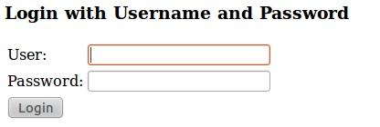
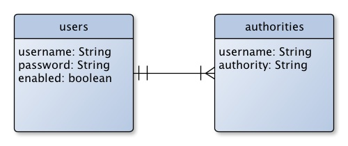
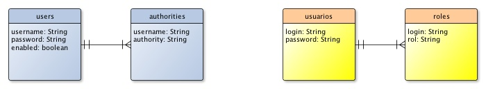

Seguridad
En este tema vamos a introducir Spring Security, un proyecto "hijo" de Spring que permite controlar de forma declarativa y totalmente configurable la seguridad de nuestra aplicación. Además, nuestro proyecto será totalmente portable entre servidores, a diferencia de la seguridad declarativa estándar de JavaEE, que no lo es en varios aspectos, por ejemplo, la definición de usuarios y roles.
Conceptos básicos de seguridad
Lo primero que encuentra un usuario que intenta acceder a una aplicación segura es el mecanismo de autentificación. Para autentificarse, el usuario necesita un principal, que típicamente es un login y unas credenciales, normalmente un password. No siempre se usa login y password. El principal y las credenciales pueden proceder por ejemplo de un certificado digital o de otros mecanismos.
En Spring Security, el encargado de gestionar la autentificación es el Authentication manager. Este depende de uno o varios authentication providers, que son los que de manera efectiva obtienen el principal y credenciales del usuario. Spring security tiene implementados un gran número de proveedores de autentificación: login con formulario web, login con HTTP BASIC (el navegador muestra una ventana propia para introducir login y password), servidor LDAP, certificados digitales, etc.
La autentificación demuestra que el usuario es quien dice ser, pero queda por ver si tiene permiso de acceso al recurso que ha solicitado. Esto se denomina control de acceso. Aquí entra en juego el Access manager, que en función de las credenciales, toma la decisión de permitir o no el acceso. Normalmente cada usuario tiene asociado una serie de roles o, como se dice en Spring, de authorities, que se asocian a los recursos para permitir o no el acceso.
En una aplicación normalmente solo hay un access manager, aunque Spring permite el uso simultáneo de varios, que "por consenso" o "por votación" decidirán si conceden el acceso al recurso
En aplicaciones web sencillas el control de accesos declarativo suele ser una cuestión de "todo o nada" para un determinado rol. Una forma más avanzada de control de accesos es algo muy común en sistemas operativos: las Access Control Lists (ACL) que especifican qué operaciones (acceso/modificación/borrado) puede realizar cada usuario sobre cada recurso. Las aplicaciones con requerimientos de seguridad avanzados pueden asignar a cada recurso un ACL que controlará Spring Security, lo que proporciona una enorme flexibilidad de configuración.
Hay otros tipos de gestores de seguridad en Spring Security, como los run-as managers, que permiten ejecutar ciertas tareas cambiando temporalmente el rol del usuario (al estilo de su en UNIX) o los after invocation managers, que controlan que todo es correcto después de acceder al recurso. No obstante, quedan fuera del ámbito de estos apuntes. Aunque la documentación de Spring Security no es tan exhaustiva como la del propio Spring, es bastante aceptable y pueden consultarse en ella todos estos conceptos.
Una configuración mínima para una aplicación web
Antes de realizar la configuración propiamente dicha debemos incluir en el proyecto las dependencias de los módulos de Spring Security que necesitemos. El framework está dividido en tres módulos: core, configuration y web. Los dos primeros son necesarios siempre. El tercero solo si vamos a asegurar una aplicación web. Con Maven basta con incluir los artefactos correspondientes en el pom.xml. Como se ve, en el momento de escribir estas líneas la versión actual es la 3.1.
<dependency> <groupId>org.springframework.security</groupId> <artifactId>spring-security-core</artifactId> <version>3.1.3.RELEASE</version> </dependency> <dependency> <groupId>org.springframework.security</groupId> <artifactId>spring-security-web</artifactId> <version>3.1.3.RELEASE</version> </dependency> <dependency> <groupId>org.springframework.security</groupId> <artifactId>spring-security-config</artifactId> <version>3.1.3.RELEASE</version> </dependency>
Ahora hay que configurar el framework. Vamos a ver aquí una configuración mínima por defecto para una aplicación web, y luego la iremos personalizando. Lo primero es permitir que Spring Security intercepte las peticiones a nuesttra aplicación para poder controlar la seguridad. El framework usa filtros de servlets para esto. Por ello lo primero es declararlos en el web.xml. Lo más sencillo es usar un filtro de la clase DelegatingFilterProxy ya implementada en Security. Esta clase hará de interfaz entre el mecanismo estándar de filtros y los beans que Spring security usa "por debajo" para implementar todas sus funcionalidades. A continuación se muestra el fragmento relevante del web.xml:
<filter>
<filter-name>springSecurityFilterChain</filter-name>
<filter-class>
org.springframework.web.filter.DelegatingFilterProxy
</filter-class>
</filter>
<filter-mapping>
<filter-name>springSecurityFilterChain</filter-name>
<url-pattern>/*</url-pattern>
</filter-mapping>
Lo segundo es configurar las opciones del propio Spring Security. Esta configuración se hace en un fichero de definición de beans de Spring. La configuración más sencilla que podemos hacer es la siguiente:
<?xml version="1.0" encoding="UTF-8"?>
<beans:beans xmlns="http://www.springframework.org/schema/security"
xmlns:xsi="http://www.w3.org/2001/XMLSchema-instance"
xmlns:beans="http://www.springframework.org/schema/beans"
xsi:schemaLocation="
http://www.springframework.org/schema/beans
http://www.springframework.org/schema/beans/spring-beans.xsd
http://www.springframework.org/schema/security
http://www.springframework.org/schema/security/spring-security.xsd">
<http auto-config="true">
<intercept-url pattern="/**" access="ROLE_USER" />
</http>
<authentication-manager alias="authenticationManager">
<authentication-provider>
<user-service>
<user authorities="ROLE_USER" name="guest" password="guest" />
</user-service>
</authentication-provider>
</authentication-manager>
</beans:beans>
Aunque luego explicaremos el significado de las etiquetas con más detalle, puede intuirse echándole un breve vistazo al XML que estamos protegiendo todas las URL (/**, se utiliza la notación de Ant para los paths), permitiendo solo el acceso a los usuarios con rol ROLE_USER. A continuación definimos un usuario con este rol y con login y password "guest".
El atributo auto-config="true" activa por defecto los servicios de autentificación BASIC, autentificación a través de formulario autogenerado por Spring y gestión de logout. Iremos viendo dichos servicios con más detalle en los siguientes apartados, y cómo adaptarlos a nuestras necesidades.
Por último, para terminar con nuestra configuración mínima tenemos que indicarle al contenedor de beans de Spring dónde está nuestro fichero de configuración de seguridad. Como ya se vio en la primera sesión del módulo, en aplicaciones web la forma estándar de hacer esto es definiendo un listener de la clase ContextLoaderListener en el web.xml y pasándole un parámetro contextConfigLocation con el/los nombre/s del/los fichero/s de configuración de beans:
<context-param>
<param-name>contextConfigLocation</param-name>
<param-value>
/WEB-INF/spring/root-context.xml
/WEB-INF/spring/security-context.xml
</param-value>
</context-param>
<listener>
<listener-class>
org.springframework.web.context.ContextLoaderListener
</listener-class>
</listener>
En el ejemplo estamos suponiendo que el fichero con la configuración de seguridad que hemos mostrado antes se llama security-context.xml y que tenemos otro fichero de configuración de beans donde definimos el resto de elementos de nuestra aplicación no relacionados con la seguridad.
Si ejecutamos la aplicación e intentamos acceder a una URL cualquiera dentro de ella, veremos que nos aparece la siguiente página de login, generada automáticamente por Spring Security:

Si introducimos "guest" como usuario y contraseña podremos acceder a la URL deseada. Si introducimos otras credenciales, volverá a mostrarse la página de login con un mensaje generado automáticamente por Spring ("Your login attempt was not successful, try again"). Evidentemente tal y como está la página de login y el mensaje de error no es usable en una aplicación real, porque no emplea ni el idioma ni el "look&feel" de nuestra aplicación, pero al menos así podemos comprobar de manera rápida que la seguridad funciona. Por supuesto todo esto es configurable y adaptable a nuestras necesidades de aspecto e idioma como veremos luego.
Llegados a este punto hay que hacer notar que hasta ahora, al menos a nivel funcional la seguridad que proporciona Spring Security y la estándar de JavaEE son muy similares: se protegen determinadas URL permitiendo solo el acceso a determinados roles y "alguien" (aquí Spring, en el estándar el contenedor web) intercepta las peticiones y comprueba que se posean las credenciales adecuadas. No obstante y aun con este ejemplo tan sencillo Spring Security tiene dos ventajas sobre la seguridad estándar:
- La portabilidad: como se vio en el módulo de componentes web, aunque en JavaEE las etiquetas de configuración de seguridad del web.xml están estandarizadas no lo está la forma de definir los usuarios. En Tomcat por ejemplo se pueden definir en un archivo tomcat-users.xml, pero esto no es así en otros servidores. Curiosamente en este aspecto Spring resulta ser más portable que el estándar (!).
- Con la seguridad estándar no se puede saltar directamente a la página de login, siempre hay que usar el "truco" de intentar el salto a una URL protegida para que el contenedor nos redirija a la de login. Si se salta directamente a la de login y se introducen las credenciales se produce un error. Esto a veces hace un poco "retorcida" la configuración de la página inicial de la aplicación. Sin embargo en Spring Security no hay problema en saltar directamente a la página de login (spring_security_login por defecto, aunque por supuesto es configurable, como veremos) ya que se puede especificar a qué página saltar por defecto tras esta.
Una tercera ventaja que veremos conforme vayamos complicando los ejemplos es que Spring Security permite mucha más flexibilidad y es mucho más potente que la seguridad estándar, manteniendo la portabilidad: podemos por ejemplo autentificar contra un servidor LDAP, usar single sign on con varias aplicaciones, proteger los métodos de la capa de negocio y muchas otras cosas. Hay que destacar que muchas de estas características también están disponibles en prácticamente todos los servidores de aplicaciones, pero la configuración es propia de cada uno. Por ejemplo, en JBoss, Weblogic o Glassfish es posible autentificar con LDAP, pero en cada uno la configuración se hace de manera distinta.
Autentificación contra una base de datos
Hasta ahora hemos almacenado las credenciales de los usuarios en el propio fichero de configuración. Obviamente esto sirve para hacer pruebas sencillas pero no para una aplicación en producción, necesitamos un mecanismo más realista para obtener las credenciales. Como ya hemos dicho, en Spring Security esta tarea la realizan los proveedores de autentificación.
Spring Security incorpora diversos proveedores de autentificación "listos para usar", basados en tecnologías tan diversas como certificados digitales, LDAP, JAAS, sistemas single sign-on como CAS o OpenId,... no obstante, su uso y configuración quedan fuera del ámbito de estos apuntes. Vamos a ver lo más habitual en aplicaciones web, que es almacenar las credenciales en la base de datos, lo que permite modificarlas y gestionarlas de manera sencilla. En Spring se usa un DAO authentication provider para esta tarea. La configuración más sencilla que podemos usar es la que viene a continuación:
<authentication-manager alias="authenticationManager">
<authentication-provider>
<jdbc-user-service data-source-ref="miDataSource"/>
</authentication-provider>
</authentication-manager>
<jee:jndi-lookup id="miDataSource" jndi-name="jdbc/securityDS" resource-ref="true"/>
Como las credenciales están en una base de datos debemos conectarnos con ella a través de un dataSource. Ya vimos en la primera sesión cómo acceder a dataSources JNDI con la etiqueta <jndi-lookup>. El authentication provider por defecto asumirá que la base de datos tiene una determinada estructura, que se muestra en la figura siguiente:

Como puede verse, se asume que tenemos dos tablas, una para guardar el login y password de cada usuario y otra para guardar los roles, que en Spring Security se denominan authorities. Entre ambas hay una relación uno a muchos ya que evidentemente un usuario puede tener varios roles. El campo enabled de la primera tabla indica si un usuario está habilitado o no (los usuarios deshabilitados no pueden acceder a los recursos).
Mucho más habitual que usar esta configuración por defecto será emplear el esquema de base de datos que tenga nuestra aplicación. Por ejemplo, vamos a suponer que nuestro esquema es el de la siguiente figura, que se muestra comparado con el esperado por Spring por defecto.

Por desgracia, no podemos configurar esto directamente con la etiqueta jdbc-user-service. Lo más simple es definir un bean de la clase JdbcDaoImpl, que se encarga de pasarle los datos de los usuarios al authentication provider y es configurable en este y otros aspectos.
La adaptación a nuestro esquema de base de datos se basa en que el JdbcDaoImpl usa una consulta SQL predefinida para obtener login y password de un usuario y otra para obtener los roles asociados. Las dos consultas por supuesto presuponen el esquema anterior. Lo que tendremos que hacer es suministrar consultas propias que devuelvan los resultados con los mismos nombres. En primer lugar, para comprobar el password se hace:
SELECT username, password, enabled FROM users WHERE username = ?
Donde el campo enabled, del que carece nuestra base de datos, indica si el usuario está o no activado. Con nuestro esquema, para devolver los mismos resultados que la consulta anterior, haríamos:
SELECT login as username, password, true as enabled FROM usuarios WHERE login=?
Por otro lado, para obtener los roles (authorities) de un usuario, se hace:
SELECT username, authority FROM authorities WHERE username = ?
Con nuestro esquema de base de datos, haríamos:
SELECT login as username, rol as authority FROM roles WHERE login=?
Estas consultas se modifican a través de las propiedades usersByUsernameQuery y authoritiesByUsernameQuery de JdbcDaoImpl. Así, nuestro XML quedaría:
<authentication-manager alias="authenticationManager">
<authentication-provider user-service-ref="miUserServiceJDBC" />
</authentication-manager>
<beans:bean id="miUserServiceJDBC"
class="org.springframework.security.core.userdetails.jdbc.JdbcDaoImpl">
<beans:property name="dataSource" ref="miDataSource"/>
<beans:property name="usersByUsernameQuery"
value="SELECT login as username, password, true as enabled
FROM usuarios WHERE login=?"/>
<beans:property name="authoritiesByUsernameQuery"
value="SELECT login as username, rol as authority
FROM roles WHERE login=?"/>
</beans:bean>
<jee:jndi-lookup id="miDataSource" jndi-name="jdbc/securityDS" resource-ref="true"/>
Donde definimos y configuramos un bean de la clase JdbcDaoImpl, le damos un nombre arbitrario y usamos ese nombre en el atributo user-service-ref de la etiqueta que define el proveedor de autentificación
Seguridad de la capa web
Vamos a ver aquí cómo configurar y controlar todo lo relacionado con la seguridad de la capa web: la visualización o no de ciertos fragmentos de HTML dependiendo del rol, el acceso a los métodos de los controladores, etc
Configuración del login basado en formularios
La mayoría de aplicaciones web usan un formulario HTML para que el usuario introduzca su login y password. Hemos visto que por defecto Spring crea automáticamente este formulario, pero lo habitual será que lo hagamos nosotros para poder darle el "look and feel" de la aplicación. Esto se consigue con la etiqueta form-login:
<http pattern="/login.html" security="none"/>
<http>
<intercept-url pattern="/**" access="ROLE_REGISTRADO, ROLE_ADMIN" />
<form-login login-page="/login.html" default-target-url="/main.html" />
</http>
Con el atributo login-page se especifica la página que contiene el formulario de login y con default-target-url la dirección a la que se saltará por defecto. Como ya hemos dicho, en este aspecto la autentificación con formulario de Spring se diferencia ligeramente de la seguridad declarativa estándar de JavaEE. En el estándar no se suele saltar directamente a la página de login, sino que esta se muestra automáticamente cuando el usuario intenta acceder a un recurso protegido. En Spring nada nos impide acceder directamente a la página de login, ya que se nos redirigirá una vez hecho login a la página indicada por default-target-url. Independientemente de ello, por supuesto, cuando en Spring se intenta acceder a un recurso protegido también "salta" la página de login.
Nótese que la existencia de la página de login nos obliga a desprotegerla para que los usuarios puedan acceder a ella. Esto se hace poniendo otro elemento http aparte que indique que esta página no debe estar protegida. Hay que llevar cuidado ya que Spring aplicará el primer patrón que encaje con la URL, de modo que si pusiéramos esta línea al final no funcionaría correctamente (ya que se aplicaría el patrón "/**").
La página de login contendrá un formulario HTML cuyos campos deben tener un nombre estándar, al estilo de los que se usan en seguridad declarativa JavaEE:
<form action="j_spring_security_check" method="post">
Usuario: <input type="text" name="j_username"/> <br/>
Contraseña: <input type="password" name="j_password"/> <br/>
<input type="submit" value="Entrar"/>
</form>
Spring nos ofrece un servicio de logout que se encarga de invalidar automáticamente la sesión HTTP y, si lo deseamos, redirigir al usuario a una página de "salida". Este servicio se configura con la etiqueta logout, que se debe colocar dentro de la de http:
<http> ... <logout logout-url="/logout" logout-success-url="/adios.jsp"/> </http>
El atributo logout-url indica qué URL "disparará" el proceso. Por tanto, para que el usuario pueda hacer logout bastará con un enlace a esta URL en cualquier página. Por defecto esta URL es /j_spring_security_logout. Con logout-success-url indicamos a qué página se saltará tras invalidar la sesión. Por defecto es "/".
Por otro lado Spring nos da la posibilidad de recordar que ya hemos hecho login para ahorrarnos la operación en sucesivas visitas al sitio desde la misma máquina, aunque cerremos el navegador. Esta es una opción muy habitual en muchos sitios web y normalmente se implementa guardando en una cookie un token de autentificación, que asegura que en algún momento hemos hecho login correctamente. En Spring esta funcionalidad se llama "remember-me" y se implementa con una cookie que es por defecto un hash md5 del login y password del usuario, la fecha de expiración del token y una palabra clave propia de la aplicación. Para activar el "remember-me" hay que usar la etiqueta del mismo nombre dentro de la de http:
<http>
...
<remember-me key="claveDeLaAplicacion"/>
</http>
key es simplemente un valor que solo nosotros deberíamos conocer y que se combina con el resto de campos para darle una mayor seguridad al token y que además este sea exclusivo de la aplicación web.
Además para que se active esta funcionalidad debemos añadir un campo al formulario de login. Este campo le permitirá al usuario elegir si desea usar o no la característica, y por defecto debe llamarse _spring_security_remember_me. Nuestro formulario de login quedaría así:
<form action="j_spring_security_check" method="post">
Usuario: <input type="text" name="j_username"/> <br/>
Contraseña: <input type="password" name="j_password"/> <br/>
<input type="checkbox" name="_spring_security_remember_me"/>
Recordar mis credenciales <br>
<input type="submit" value="Entrar"/>
</form>
Localización de los mensajes de error
Todas las excepciones que saltan cuando se produce algún problema de autorización tienen los mensajes internacionalizados y externalizados en ficheros .properties. Los mensajes en inglés están en messages.properties en el paquete org.springframework.security y también traducidos a más de una decena de idiomas siguiendo la convención habitual (incluyendo español, en messages_es_ES.properties). Por tanto, y siguiendo lo que vimos en sesiones anteriores basta con definir un messageSource en nuestro fichero de configuración de beans que referencie este archivo de mensajes (recordemos que en esta sesión hemos optado por tener un fichero únicamente con la configuración de seguridad y otro con la configuración del resto de beans. Esto se debería incluir en este último:
<bean id="messageSource"
class="org.springframework.context.support.ReloadableResourceBundleMessageSource">
<property name="basename" value="classpath:org/springframework/security/messages"/>
</bean>
Podemos mostrar en cualquier JSP el último mensaje de error generado por Spring haciendo uso de SPRING_SECURITY_LAST_EXCEPTION.message, que Spring guarda en ámbito de sesión. Si hemos instanciado el messageSource como acabamos de explicar, el mensaje aparecerá automáticamente en el locale actual:
${sessionScope.SPRING_SECURITY_LAST_EXCEPTION.message}
Autentificación BASIC vs. basada en formulario
En la autentificación BASIC, el navegador muestra una ventana de tipo "popup" en la que introducir login y password. En realidad, la mayor utilidad de este mecanismo es para el acceso con un cliente de tipo REST o de escritorio, ya que la forma de envío de login y password al servidor es sencilla de implementar y no requiere el mantenimiento de sesiones, a diferencia del login con formulario.
Para usar autentificación BASIC, simplemente colocaríamos la etiqueta http-basic en el XML:
<http>
<intercept-url pattern="/**" access="ROLE_USER" />
<http-basic/>
</http>
La autentificación BASIC se puede tener funcionando simultáneamente con la de formulario. Así, un navegador que intente acceder a una URL protegida será redirigido al formulario, mientras que por ejemplo un cliente REST que envíe la cabecera "Authorization" con login y password (la usada por el estándar BASIC) tendrá el acceso permitido si las credenciales son correctas. De hecho, como ya hemos visto, la opción auto-config=true pone las dos en funcionamiento simultáneamente. También podemos configurar por separado la seguridad para clientes REST y web de modo que cada uno tenga un punto de entrada distinto en la aplicación:
<!-- servicios REST sin estado con autentificación Basic --> <http pattern="/restful/**" create-session="stateless"> <intercept-url pattern='/**' access='ROLE_REMOTE' /> <http-basic /> </http> <!-- Desproteger la página de login--> <http pattern="/login.htm*" security="none"/> <!-- Clientes web con autentificación basada en formulario --> <http> <intercept-url pattern='/**' access='ROLE_USER' /> <form-login login-page='/login.htm' default-target-url="/home.htm"/> <logout /> </http>
El create-session="stateless" del ejemplo anterior le indica a Spring que no es necesario mantener una HttpSession en el servidor para autentificar a los clientes REST, ya que estos enviarán en cada conexión las credenciales.
Seguridad de "grano fino" en los JSPs
Ya hemos visto cómo permitir o denegar el acceso a una página completa. Ahora vamos a ver cómo hacer que se muestre o no determinada sección de un JSP. Por ejemplo podríamos mostrar solo el menú de administrador a los usuarios con ROLE_ADMIN, o mostrar únicamente el logout a los usuarios que se hayan autentificado. Para ello lo más sencillo es usar la taglib de Spring Security. La etiqueta básica para implementar esta funcionalidad es authorize, que debe "envolver" la sección de JSP que deseamos mostrar (o no).
Primero hay que tener en cuenta que para usar esta taglib debemos introducir otra dependencia en el pom.xml
<dependency>
<groupId>org.springframework.security</groupId>
<artifactId>spring-security-taglibs</artifactId>
<version>3.1.3.RELEASE</version>
</dependency>
Hay dos formas de controlar si se muestra o no la sección de código JSP. La primera es usar una URL como referencia, de modo que el código solo se mostrará a los usuarios que tengan permiso para acceder a ella. Para esto se usa el atributo llamado, precisamente, url
<%@ taglib prefix="sec" uri="http://www.springframework.org/security/tags" %> ... <sec:authorize url="/admin/eliminar"> <a href="/admin/eliminar">Eliminar</a> </sec:authorize>
Como se ve, esta forma de uso es muy adecuada para los casos en los que solo queremos mostrar un enlace a los usuarios que tienen permiso para acceder a él. El resto no lo vería. Evidentemente aunque aquí hemos puesto un enlace, en general es un fragmento arbitrario de código JSP.
La otra forma de usar authorize es con una expresión en lenguaje SpEL (Spring Expression Language) que mostrará el código solo si se evalúa a true. Ya vimos en la primera sesión del módulo una muy breve introducción a este lenguaje, que nos permite entre otras cosas evaluar expresiones aritméticas y lógicas o llamar a métodos. Hay una serie de métodos de Spring Security específicamente diseñados para ser usados con SpEL, por ejemplo:
- hasRole(rol): es cierta si el usuario actual que se ha autentificado tiene el rol especificado
- hasAnyRole(rol1, rol2, ...): es cierta si el usuario actual que se ha autentificado tiene uno de los rol especificados (se ponen separados por comas)
- permitAll(): es cierta por defecto, indicando por tanto que queremos permitir el acceso a todos los usuarios. denyAll() sería lo contrario.
- isFullyAuthenticathed(): es cierta si el usuario se ha autentificado con login y password. Esto no sería así por ejemplo en el caso en que se haya usado el remember-me. En este caso, sería cierta la expresión isRememberMe().
- hasIpAddress(dir): cierta si el usuario se ha autentificado desde esta IP. Se pueden usar rangos como '192.168.1.1/20'
La expresión de SpEL hay que ponerla como valor del atributo access de la tag authorize. Por ejemplo, para permitir acceso solamente a un administrador que se conecte desde la máquina local:
<%@ taglib prefix="sec" uri="http://www.springframework.org/security/tags" %>
...
<sec:authorize access="hasRole('ROLE_ADMIN') and hasIpAddress('127.0.0.1')">
<p>Esto solo lo debería ver un admin conectado localmente</p>
</sec:authorize>
Cuidado: para poder usar expresiones de SpEL en chequeo de permisos es necesario activar su soporte. La forma más sencilla (aunque engorrosa, y enseguida veremos por qué) es añadir el atributo use-expressions="true" en la etiqueta http que proteja la URL donde vamos a usar el tag. Y hemos dicho engorrosa, porque este atributo nos va a obligar a reescribir los valores de access de las etiquetas intercept-url que estén dentro, ya que ahora estos valores no se toman como nombres textuales de roles, sino como expresiones. Así, el equivalente a por ejemplo ROLE_ADMIN ahora sería hasRole('ROLE_ADMIN'). Otro ejemplo:
<http use-expressions="true">
<intercept-url pattern="/**" access="hasAnyRole('ROLE_USER', 'ROLE_ADMIN')"/>
</http>
Seguridad de la capa de negocio
Para mayor seguridad podemos controlar los permisos al ejecutar cualquier método Java. Los métodos restringidos se pueden especificar de dos formas: con anotaciones en el código fuente o con etiquetas XML en el fichero de configuración. Como siempre, la ventaja de la anotación es que el código queda más claro y autocontenido. Por otro lado, si colocamos las restricciones de acceso en un fichero XML podemos hacer que estas afecten a múltiples métodos y no solo a uno, como luego veremos
Lo primero que necesitamos es la habilitar este tipo de seguridad. Esta configuració se hace con la etiqueta global-method-security
En una aplicación web, el intento de ejecutar código sin permiso acabará generando una respuesta HTTP con código 403 (acceso denegado), gracias a los filtros de Spring. Esto nos permite tratar de manera uniforme las denegaciones de acceso sean por URL o por código.
Seguridad con anotaciones estándar
Podemos anotar los métodos a los que queramos restringir el acceso. En el estándar JavaEE, las anotaciones del JSR-250 son las que se usan con esta finalidad. Spring ofrece soporte para este estándar, aunque también tiene una anotación propia más o menos equivalente llamada @Secured. Evidentemente, usar las anotaciones estándar aumentará la portabilidad de nuestro código, por lo que es lo más recomendable.
En este caso, en el XML de configuración de seguridad deberíamos incluir:
<global-method-security jsr250-annotations="enabled"/>
Si quisiéramos usar la anotación @Secured deberíamos incluir el atributo secured-annotations="enabled". Ambos tipos de anotaciones pueden usarse simultáneamente.
En el código a proteger, escribiremos:
@RolesAllowed("ROLE_ADMIN")
public void eliminarUsuario(UsuarioTO uto) {
...
}
Al igual que en el estándar, si colocamos la anotación delante de la clase, estamos protegiendo todos sus métodos.
Seguridad con anotaciones de Spring Security 3
La versión 3 del framework añadió la posibilidad de usar expresiones SpEL en las anotaciones de seguridad del código. No obstante, las anotaciones que hemos visto (@RolesAllowed y @Secure) no soportan el uso de expresiones. Se introducen para ello dos anotaciones más: @PreAuthorize y @PostAuthorize. La primera de ellas, como su propio nombre indica, chequea que la expresión SpEL sea cierta antes de ejecutar el código. La segunda, tras ejecutarlo.
Para poder usar estas anotaciones lo primero es configurarlas en el XML de Spring Security:
<global-method-security pre-post-annotations="enabled"/>
Una vez hecho esto, podemos anotar cualquier método que queramos proteger y en que la condición de chequeo vaya más allá de tener un determinado rol. Además de usar las expresiones típicas de SpEL, podemos usar las funcionalidades propias de seguridad que ya vimos en el apartado de la capa web (hasIPAddress, isFullyAuthenticated,...). Además podemos referenciar los valores de los parámetros, precediéndolos del símbolo '#'. Por ejemplo supongamos una aplicación de mensajería en la que un usuario puede enviar un mensaje a otro a través de este interfaz:
public interface IMensajeriaBO {
...
public void enviarMensaje(UsuarioTO uto, MensajeTO mto);
...
}
Y supongamos que queremos chequear no solo que el usuario actual se ha autentificado, sino que además tiene crédito para enviar el mensaje (que uto.getCredito() devuelve un valor mayor que cero.). Podríamos usar la siguiente anotación:
public interface IMensajeriaBO {
...
@PreAuthorize("hasRole('ROLE_USER') and #u.credito>0")
public void enviarMensaje(Usuario u, Mensaje m);
...
}
Nótese que en SpEL podemos llamar a los getters con la notación objeto.propiedad.
En ciertos casos puede ser interesante acceder a información sobre el usuario actual. Esta información la tenemos en el objeto principal. Por ejemplo, supongamos que queremos verificar que un usuario está intentando cambiar su propio password y no el de otro:
public interface IUsuarioBO {
@PreAuthorize("#u.login == principal.username and hasRole('ROLE_USER')")
public void cambiarPassword(Usuario u, String nuevoPassword);
}
Por otro lado las anotaciones @PreFilter y @PostFilter sirven para filtrar colecciones. La más habitual es @PostFilter, que elimina los elementos que no cumplan la condición una vez se ha llamado al método. Por ejemplo, supongamos que los administradores pueden listar los datos de los demás usuarios, pero no los de los otros administradores, que solamente puede listar el usuario con rol 'ROLE_ROOT'. Vamos a suponer que la clase Usuario tiene un método isAdmin() que nos indica si un usuario es o no administrador. Podríamos hacer algo como:
public interface IUsuarioBO {
...
@PostFilter("hasRole('ROLE_ROOT') or (hasRole('ROLE_ADMIN')
and !filterObject.isAdmin())")
public List<Usuario> getUsuarios();
...
}
Lo que va haciendo Spring es aplicar la expresión uno a uno a los objetos de la colección, eliminando aquellos que no la cumplan (visto de otro modo, que la expresión se cumpla indica los objetos que "dejamos pasar"). El filterObject es el objeto actual que estamos comprobando si filtrar o no.
Seguridad en el XML de configuración
La principal ventaja de esta forma de trabajar es que podemos cambiar la seguridad sin necesidad de tocar una sola línea de código. En el XML, con la etiqueta protect-pointcut podemos especificar una expresión AOP que indique qué puntos del código queremos proteger e indicar a qué roles les será permitido el acceso. Para hacernos una idea rápida (y un poco grosera), podríamos verlo como que estamos poniendo una expresión regular con la que deben encajar los métodos que queremos proteger. La sintaxis de esta pseudo-expresión regular es la de AspectJ, el framework AOP más difundido en el mundo Java y que es el que usa Spring.
<global-method-security>
<protect-pointcut
expression="execution(* eliminarUsuario(..))"
access="ROLE_ADMIN"/>
</global-method-security>
Lo que viene a decir la expresión AspectJ anterior es que queremos interceptar la ejecución de cualquier método llamado eliminarUsuario, tenga el número y tipo de argumentos que tenga (el ".." es un comodín para uno o más tokens) y devuelva lo que devuelva el método (como solo habrá un valor de retorno ponemos el comodín para un solo token, "*"). Así, para ejecutar cualquier método que encaje con esta expresión habrá que tener rol ROLE_ADMIN. Se recomienda consultar el apéndice de AOP de los apuntes para más información sobre la sintaxis de las expresiones de AspectJ soportadas por Spring y sobre AOP en general.